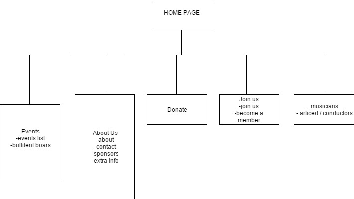

CP1406 - Assignment 2 - Project Plan
Names: Nick Barty (JC 463287) , Jacob Madeley (JC 429882)
Goals:
The goal of the website is to update the existing Barrier Reef Orchestra website to give it a more professional look and feel, making sponsors and future club members more likely to donate. The site also intends to try appeal to younger people to get them joining as well create increased community interest towards the orchestra
Success Evaluation:
The website will be successful if it's updated to have a more professional look and feel, increased amount of sponsors, club members and younger people joining as well as a heightened community interest
Target Audience:
The target audience of the website is younger people (roughly 14-25) as well as potential benefactors as these are the main people that the website needs to reach out to in order to ascertain the website goal. The site will be designed to reach out to younger people mainly but will also be suitable for older people to use as well.
This will be achieved by using a uniform design (colour scheme, layout, etc) that is easy to understand and has high usability. The site will also be designed with clear and concise navigation as well as easy to read content that isn't overly long and tedious to read
Site Flowchart:
Github repo name: Group-Assignment
Github repo URL: https://github.com/JacobMadeley/Group-Assignment